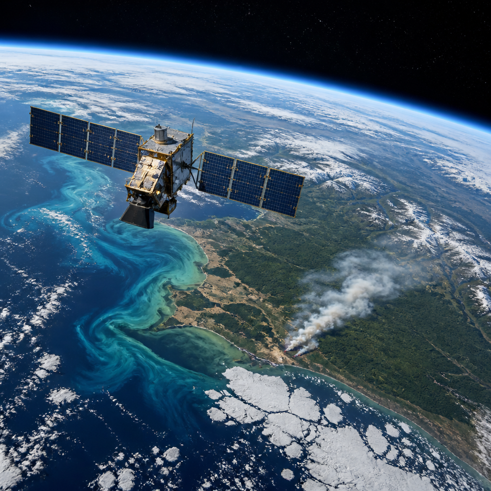
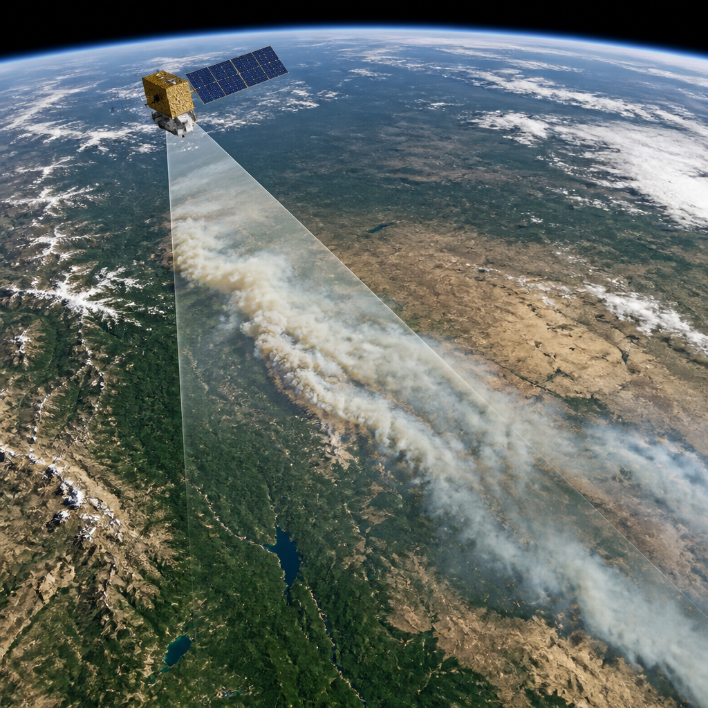
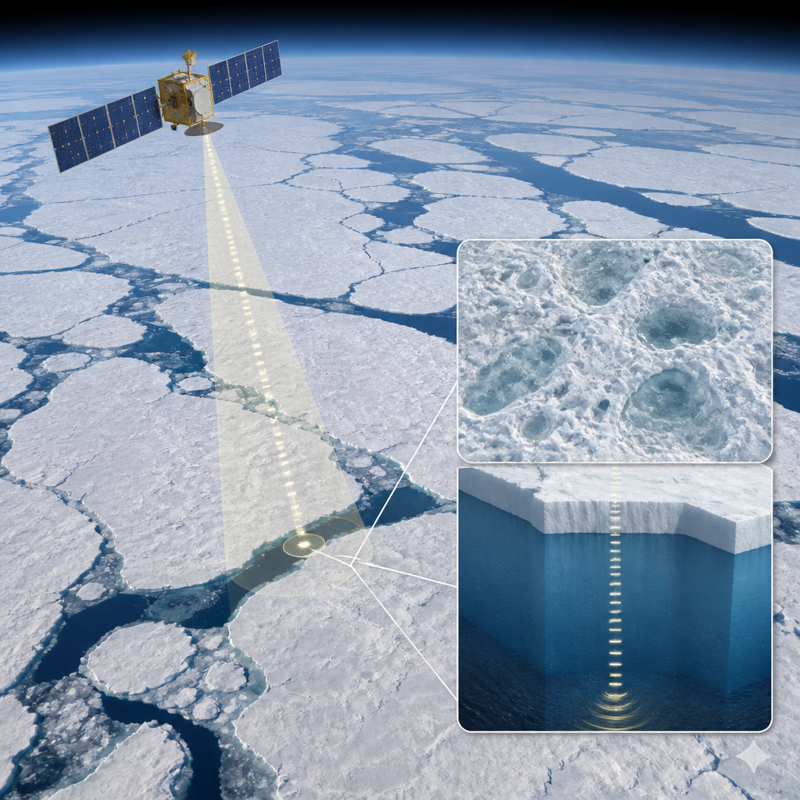

La missione europea combina strumenti diversi per raccogliere ogni giorno dati utili a monitorare i principali sistemi della Terra.
Seguire il cambiamento climatico richiede osservazioni continue di fenomeni diversi: la temperatura della superficie del mare, l'altezza delle acque, l'estensione dei ghiacci, il calore del suolo, la vegetazione e le condizioni dell'atmosfera. Sentinel-3 è una missione progettata proprio per raccogliere questo insieme molto ampio di informazioni. I suoi dati riguardano oceani, terre emerse e atmosfera e, dal lancio del primo satellite della serie, sono stati impiegati nella ricerca scientifica e nelle analisi che sostengono le politiche climatiche globali.
La caratteristica distintiva della missione è la combinazione di sensori presenti a bordo di ciascun satellite. Usati insieme, permettono di collegare misure che descrivono aspetti differenti dell'ambiente. Gli strumenti hanno inoltre un ampio campo di osservazione: possono acquisire rapidamente dati su regioni molto estese. Questa capacità consente di seguire i cambiamenti negli ecosistemi marini, nelle superfici terrestri e nei processi atmosferici.
Sentinel-3 fornisce una copertura globale quotidiana. I suoi radiometri multibanda, strumenti che misurano l'energia in più intervalli di lunghezze d'onda, possono osservare le concentrazioni di metano ad alta risoluzione e integrare le informazioni di altre missioni Copernicus. In studi pubblicati nel 2023, i dati della missione hanno contribuito all'analisi di alcuni grandi emettitori di metano. Le osservazioni possono rilevare perdite di almeno 10 tonnellate all'ora, a seconda del luogo e delle condizioni meteorologiche, ogni giorno.
Le misure sono utili anche per i dati su emissioni di carbonio, inquinamento e particelle di polvere. I sensori ad ampio campo possono coprire aree larghe fino a 1400 chilometri: una scala adatta a osservare emissioni industriali che oltrepassano i confini, ma anche il fumo degli incendi, le eruzioni vulcaniche e le tempeste di polvere.

Sulle terre emerse, Sentinel-3 misura le temperature della superficie e può quindi mostrare le ondate di calore e gli incendi. Fornisce inoltre dati sulle foreste del pianeta, compresi indici di vegetazione, mappature della copertura forestale e dei cambiamenti nell'uso del suolo. Le stesse osservazioni servono a misurare la siccità, monitorare gli incendi e individuare le aree bruciate, dette cicatrici da incendio.
Per mari, fiumi e laghi, la missione osserva livelli dell'acqua, temperatura della superficie marina e colore dell'oceano, oltre allo spessore del ghiaccio terrestre e marino. Il colore dell'oceano è una misura ottica che può sostenere lo studio delle caratteristiche marine. La temperatura della superficie del mare viene rilevata con un sensore termico molto accurato, il radiometro per la temperatura della superficie del mare e della terra, noto come SLSTR. La sua calibrazione lo rende uno strumento di riferimento per queste misure e i suoi dati sostengono ricerche che vanno dalla biodiversità all'acidificazione degli oceani.
Un altro strumento, l'altimetro radar ad apertura sintetica, o SRAL, misura con precisione l'altezza della superficie dell'acqua. I suoi dati contribuiscono alle serie di lungo periodo sull'innalzamento del livello del mare, insieme a quelle di altre missioni. La media globale dell'aumento del livello del mare è di 3,64 millimetri all'anno dal 1999 e sta accelerando. L'altimetria, cioè la misura delle altezze della superficie, contribuisce anche ai dati di lungo periodo sullo spessore del ghiaccio marino.

I dati di Sentinel-3 contribuiscono a serie informative usate nei rapporti del Gruppo intergovernativo sul cambiamento climatico, l'IPCC. Alimentano inoltre tutti i 55 indicatori climatici definiti dal Sistema globale di osservazione del clima, il GCOS. Questi indicatori, chiamati variabili climatiche essenziali, sono grandezze osservate in modo sistematico perché aiutano a descrivere l'evoluzione del clima.
La missione fornisce anche dati rapidi e cartografie per le attivazioni di emergenza di Copernicus, per esempio durante alluvioni e incendi. Dall'inizio del 2026, il servizio di gestione delle emergenze di Copernicus ha registrato più di 77 attivazioni; oltre la metà ha riguardato incendi, secondo dati aggiornati al 2 settembre. Per tempeste e inondazioni, Sentinel-3 osserva sull'oceano aperto altezza della superficie marina, temperatura e dinamica di vento e onde, informazioni che aiutano a seguire mareggiate da tempesta e tifoni.
Sentinel-3 unisce osservazioni di atmosfera, suolo, oceani e ghiacci. I suoi dati quotidiani aiutano a individuare perdite di metano, seguire incendi e siccità, misurare temperatura e livello del mare e studiare lo spessore del ghiaccio marino. La continuità delle misure è essenziale per riconoscere i cambiamenti climatici nel tempo.
L'uso dei dati continua a evolvere. I tempi fra acquisizione e trasmissione verso una stazione a terra sono stati ridotti, così che le informazioni possano arrivare più velocemente agli utenti. Nel frattempo sono stati sviluppati algoritmi, cioè procedure di calcolo per elaborare le osservazioni, che permettono di ottenere nuove informazioni anche da dati che la missione raccoglie da anni. In particolare, le analisi dello spessore del ghiaccio marino e dell'idrologia sulle terre emerse mostrano come le misure ottiche e altimetriche possano essere usate in modi sempre più efficaci.
Questo articolo l'hai letto sul blog di Meteo Radar: un'app che ti mostra da dove vengono i numeri, invece di limitarsi a dartelo. E ogni mattina ne trovi uno nuovo come questo.